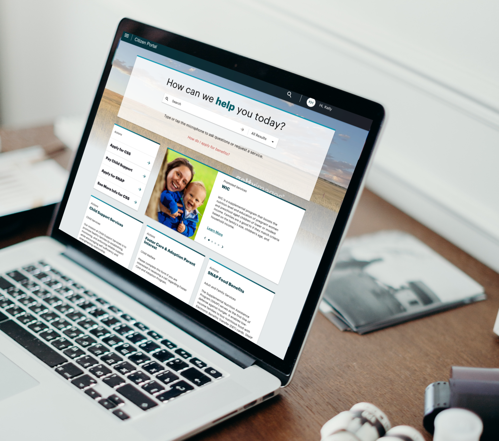

Accenture
Design Thinking Lab and Various Digital Product Design / Development
At Drawn we worked with several large consulting firms as strategic partners. Throughout my time at Drawn, I worked almost exclusively with Accenture. Accenture tasked Drawn to help them develop and rollout a Design Thinking Lab model and leveraged Drawn's resources to staff the design side of the lab.
I also served as design director on a a large multi-disciplined team focused on designing and developing a "white-label" software solution that could be used as a platform accelerator for large multi-year systems integration projects. As part of this team, I helped develop an Agile working methodology for design that would compliment the cadence of how the current on-shore and off-shore developers were accustomed to working.
At this time I am unable to show detailed screens of the work on my portfolio due to an ongoing NDA. However, below are a few highlighted projects that came out of my near year-and-a-half engagement with Accenture.

Helix Design Lab & Innovation Studio
- Drawn led the development of a multidiscipline studio structure to help Accenture inject design and design thinking into its processes.
These activities included:
- Establishing the Helix Lab and developing brand, process and toolsets
- Creating a foundational HELIX design system
- Developing Project Discovery by facilitating concept and design sprints
- Developed design materials and prototypes to help new business demo and sell project work
Reach and The State of Oklahoma
- A large part of my activities with Accenture was to support the design side efforts of creating a large scale "white-label" digital product.
The intent of this product was to support digital transformation efforts related to Health and Human Services Departments within state and city governments.
For over a year our small team worked in agile sprints with developers to built a tool to service Child Welfare Services, Child Support Services and Adult Family Services.
This Proof of Concept work was sold and became a large-scale systems integration project. I was tapped for that team as well.
Arizona Department of Public Safety
- The Helix team was often tapped to develop and run multi-day design workshops with potential clients that were exploring the Reach platform.
I developed and facilitated a workshop for The Arizona Department of Public Safety to help them understand how to improve the experience for their citizens.
These workshop activities culminated into several concepts that Arizona quickly used to secure funding for the continuation of work and to explore a full Reach implementation.
Panorama
- Panorama was a Proof of Concept project to explore how case workers could leverage available data across various systems to have a more comprehensive view of a recipient's life situation.
This work included:
- Concept sprint facilitation with the product development team
- Prototyping and iterative feedback
- Developing detailed functional specifications for a follow on MVP build
This project ultimately dovetailed into elements of the Reach platform mentioned above.